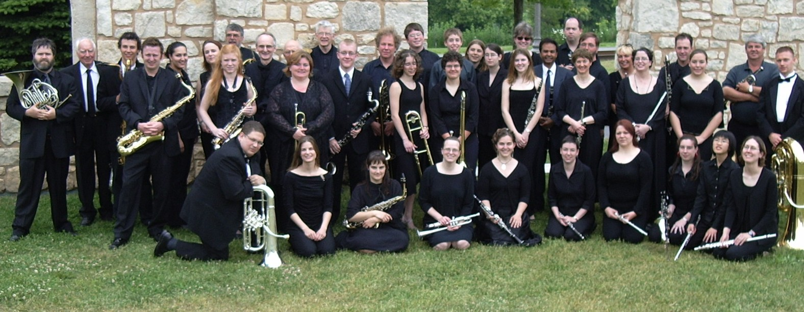

|
|
 |
|
|
Serving the Guelph Community since 1878!
|
|
For over 130 years, the Guelph Concert Band has been entertaining
audiences with its diverse repertoire and high quality performances.
Under the direction of the talented Chris Cigolea the band is always
working to put on entertaining concerts. Come see us at one of our upcoming
shows. You're in for a real treat!
Our members range from high school students to seniors and come
from various backgrounds and lines of work. Brought together by a love
of sharing music with the community, we are all individuals who play
music in our spare time. Today the band has a membership of over 50
musicians who perform both challenging and varied repertoire. We are
always happy to welcome new members, and if you are interested in joining
the band or just checking us out, please visit the rehearsals section for
more information and to let us know you are coming.
The band rehearses only two hours a week on Sunday nights, but
achieves the sound and balance of a professional ensemble. We often
have guests at our concerts, including choirs, dancers and soloists. If
you or your group are interested in performing with the band, please
send us your information and we will see if you or your group can be
incorporated into one of our concerts.
The Guelph Concert Band invites you to become involved with this
vibrant organization. Help is always welcome. Please feel free to
contact us to enquire about sponsorship opportunities.
We hope to see you out at one of our many upcoming concerts, both in
the park and in the concert hall!
|
|